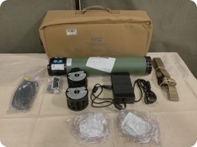
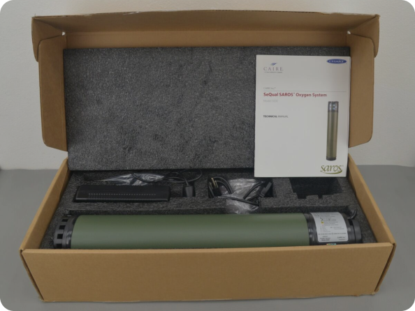

<section class="fourth">
    <div class="container">

        <div class="swiper">
            <div class="swiper-wrapper">
              <!-- Slides -->
              <div class="swiper-slide">
                
              </div>
              <div class="swiper-slide">
                
              </div>
            </div>
          
            <div class="swiper-button-prev"></div>
            <div class="swiper-button-next"></div>
        </div>

        <p class="fourth__text">
          In terms of functionality, the SAROS 3000 is almost identical to an oxygen cylinder, but is safer, easier to transport and more technologically advanced. Whereas the oxygen cylinder stores compressed oxygen, the SAROS 3000 allows you to pump oxygen directly from the environment. This reduces the explosion hazard of the design and allows it to be used much longer, not to mention the fact that the classic oxygen cylinder is much heavier.
        </p>
    </div>
</section>